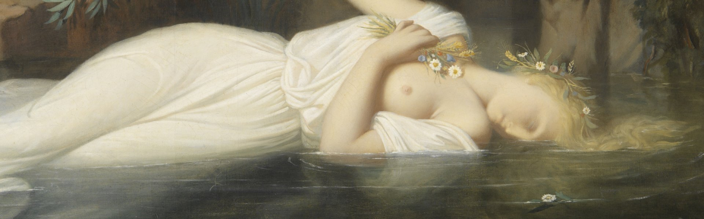

L'expo en quelques mots ...
L'exposition Musées de Paris a lieu dans le plus célèbre musée du monde, le Musée du Louvre, abritant en son sein, l'éternelle Mona Lisa. Ce musée, qu'on ne présente plus,
au cœur de la Ville Lumière, lance en 2022 cette exposition dans le but de rassembler les plus illustres œuvres que renferme la capitale française. Les plus grands musées de Paris (musée du Louvre, Musée d'Orsay, Musée du Quay Branly - Jacques Chirac, Musée d'Arts Modernes, Musée Rodin et bien d'autres encore) réunis en un même lieu, c'est désormais possible. Alors, venez nombreux, afin d'émerveiller vos yeux, face à ce haut lieu du riche patrimoine culturel français.
Horaires :
Exceptionnellement, et à l'occasion de l'exposition Musées de Paris, les équipes du Musée du Louvre vous accueillent tous les jours de l'année de 09h00 à 18h00. La dernière entrée dans le musée se fait à 17h00 tous les jours, l'évacuation des salles est procédée, quant à elle, à 17h30.
Tarifs :
| Plein Tarif Musée | 17,00 € |
| Jeunes de moins de 18 ans | Gratuit Voir toutes les |
| Visiteurs de 18-25 ans résidents dans l'UE | |
| Visiteurs porteurs de cartes professionnelles | |
| Visiteurs porteurs de cartes Louvre | |
| Autres visiteurs exonérés |
Gratuité & Justificatifs :
Gratuité pour les personnes exonérées hors possesseurs de Cartes Louvre :
Sont concernés,
les moins de 18 ans sur présentation d'une pièce d'identité officielle,
les jeunes de 18 à 25 ans résidant dans l'un des pays de l'Union Européenne sur présentation d'un justificatif de résidence dans l'un des pays membres et pièce d'identité officielle.
Gratuité pour les porteurs de cartes professionnelles :
Sont concernés,
les enseignants sur présentation du Pass Éducation en cours de validité et portant le cachet de l'établissement,
les enseignants en histoire des arts, histoire de l'art, arts plastiques, arts appliqués, en activité, sur présentation d'un justificatif mentionnant la matière enseignée,
les artistes plasticiens affiliés à la Maison des Artistes et à l'AIAP (Association internationale des arts plastiques) sur présentation de la carte d'adhérent à la Maison des Artistes comportant la vignette de l'année en cours ou de l'attestation d'affiliation à la sécurité sociale des artistes plasticiens et l'AIAP, ou document URSAFF portant la mention « artiste-auteur »,
les membres de l'ICOM et de l'ICOMOS sur présentation de la carte portant la pastille de l'année en cours.
Gratuité pour certains autres visiteurs exonérés :
Sont concernés,
les demandeurs d'emploi sur présentation d'un justificatif de moins d'un an ou indiquant une période de validité accompagné d'une pièce d'identité avec photographie,
les bénéficiaires des minima sociaux sur présentation d'une attestation annuelle de perception de l'allocation supplémentaire du Fonds national de solidarité,
les visiteurs handicapés et leur accompagnateur,
les personnels hospitaliers partenaires (hôpitaux publics et privés d’Ile de France, EHPAD et ARS d’Ile de France).
Comment venir au musée ?
EN MÉTRO :
Métro Palais-Royal / Musée du Louvre.
Métro  Palais-Royal / Musée du Louvre.
Palais-Royal / Musée du Louvre.
Métro  Pyramides.
Pyramides.
EN BUS :
Lignes n° 21, 24, 27, 39, 48, 68, 69, 72, 81 et 95.
EN VOITURE :
Un parc de stationnement payant dont l'entrée se situe au 1 avenue du Général-Lemonnier, ouvert tous les jours de 7 h à 23 h, et accessible par la galerie commerciale du
Carrousel du Louvre. Les personnes en situation de handicap peuvent bénéficier d’un tarif réduit en se rendant à l’espace « Assistance » du musée du Louvre, situé sous la Pyramide.
EN VÉLIB OU VÉLO :
Les stations Vélib' les plus proches : n°1015 : 2, place A. Malraux, n°1023 : 165, rue Saint-Honoré, n°1014 : 5, rue de l’Échelle et n°1013 : 186, rue Saint-Honoré.
Des emplacements pour stationner les vélos sont disponibles devant l’École du Louvre, à proximité de la porte des Lions.
EN TAXI :
Dépose-minute possible au rond-point du Carrousel. La station la plus proche est située place André Malraux.
EN BATOBUS :
Escale "Louvre", quai François Mitterrand.
